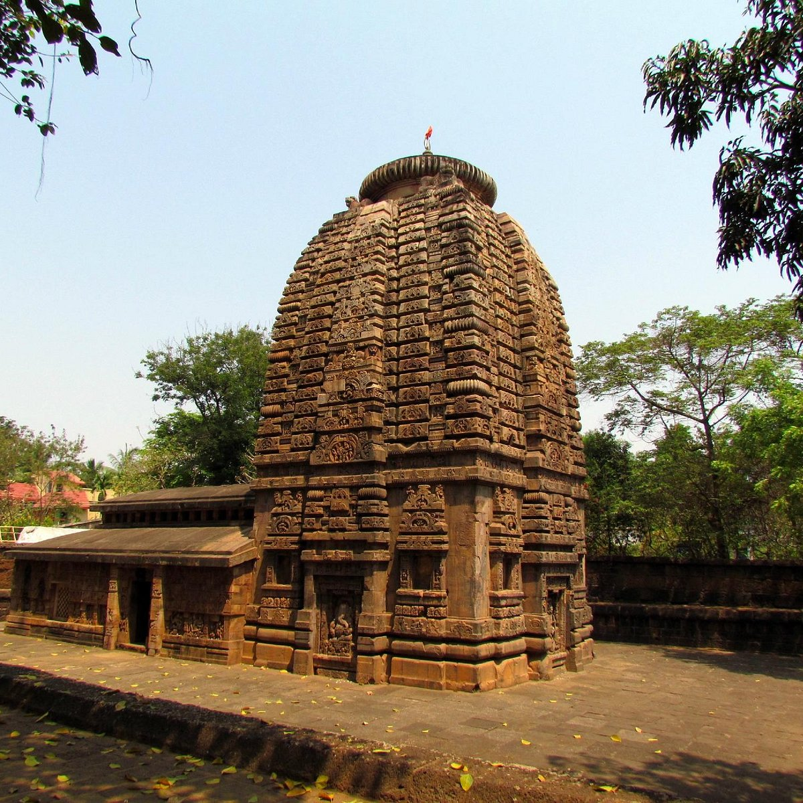

This temple was built in the 7th century during the reign of Shailodbhava’s dynasty. It is widely regarded as the place where the Odisha temple’s architecture began. It is also one of the best-preserved temples in the state. Parasurameswar temple is the first temple that has the entrance hall attached to the Sanctorum. The appearance of crude joints indicates a skill that has been acquired. Its antiquity is evident by the presence of Asta Grahas (8 planets) on its lintel. Saptamatrika is their first appearance in the state’s temple architecture. The Saptamatrika is a set of powers that different gods bestowed goddess Shakti. Click here to know more
Odisha is also known as the “Land of Lord Jagannath”, which means the Lord of all the Universe. Jagannath temple is located in Puri. It was built in the 12th Century AD. Pilgrims travel from all parts of the world to visit the Jagannath temple throughout the year. The architectural brilliance of the magnificent temple is overshadowed by the mysticism that surrounds Lord Jagannath’s cult. The temple is an architectural wonder on its own, and it is a vast architectural masterpiece. Singhadwara is the main entrance to the temple. Three entrances go along the four cardinal directions. These entrances are not aligned architecturally. Click here to know more
Brahmeswara temple is a Hindu temple dedicated to Lord Shiva. It is located in Bhubaneswar (Odisha). It was built at the end 9th century CE. The temple is well-carved both inside and outside. The 18th year of Udyotakesari, the Somavamsi King, was the year that the temple was built. This corresponds to 1058CE. According to historians, the temple is believed to be from the end of the 11th century. This was confirmed by an inscription that was brought to Calcutta from Bhubaneswar. According to the inscription, the temple was constructed by Kolavatidevi. Click here to know more